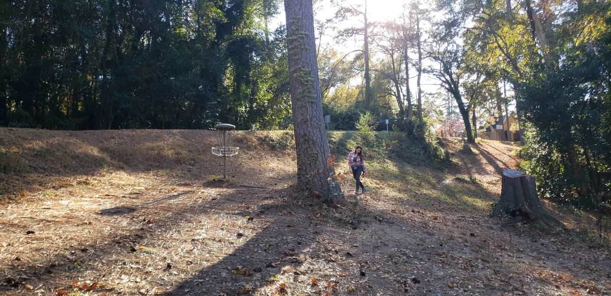
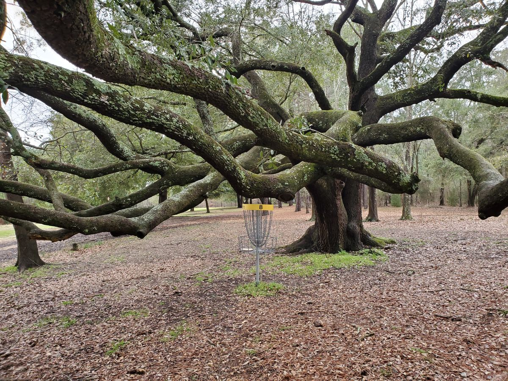
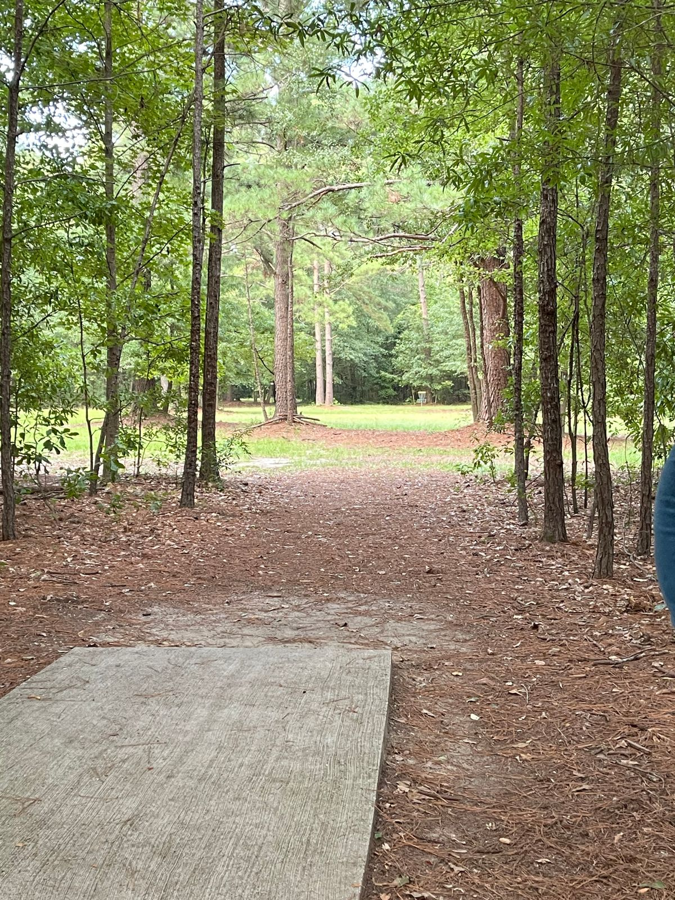

Courses
There are plenty of options to play when it comes to courses in the Columbia area. The three that I will highlight are near downtown Columbia and are all about 20 minutes or less from one another.
Earlwood
This course is one of the oldest courses in Columbia and you can tell by the baskets. These baskets were one of the first types of baskets created. They still get the job done but aren't as flashy and new looking like the other type. Earlwood course consists of a mix of open holes and wooded holes. This is a technical course that allows you to really test your skills with different angels and seeing how you might get around the next tree.
To learn more about Earlwood, please visit here.
Southeast
Southeast is a really nice course. As it is named, it is on the southeastern side of Columbia. This course is more open than most of the other courses in the area but don't let the open fairways deceive you. This is still a very tricky course with water coming into play on a couple of the holes. You must be careful not to lose a disc. This course is very beautiful as you can see here the basket on hole 8. This tree is amazing! This is probably the longest course in the area when it comes to total distance. Most of these holes are fairly long.
To learn more about Southeast, please visit here.
Owen's Field
This park is the one that I play the most often. It is a pretty technical course and it requires patience to ensure a clean throw and no trees are hit. This course is mostly wooded with a few open holes. Most holes have two tee pads to choose from, a long one and a short one. The shorter ones make the course a lot easier, as the longer ones make it a bit harder. This gives you room for improvement, and a challenge. A few holes also have different areas where the basket could be placed, and every month or so, they get moved around. This keeps the course interesting because it makes the holes a little different.
To learn more about Owen's Field, please visit here.